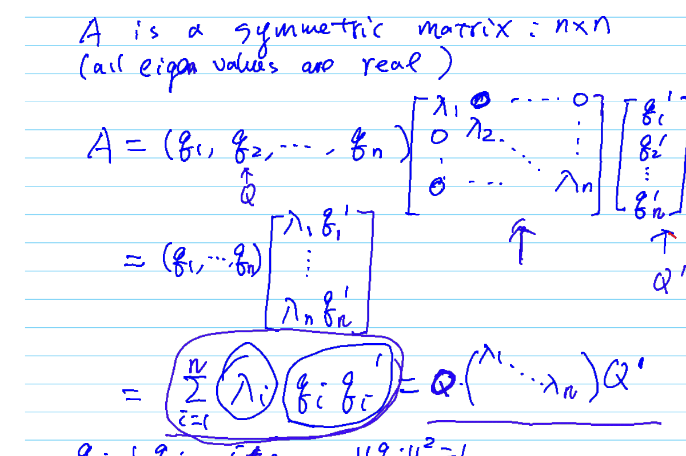
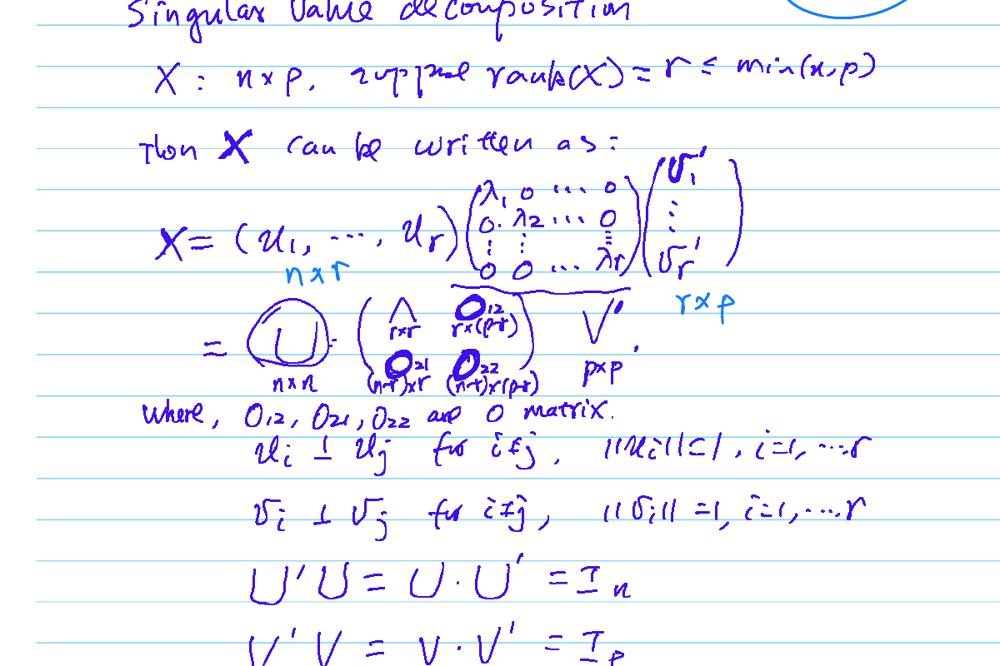
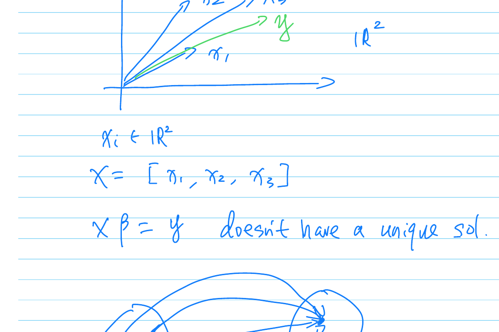
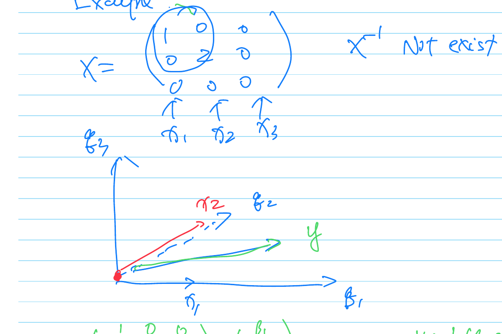
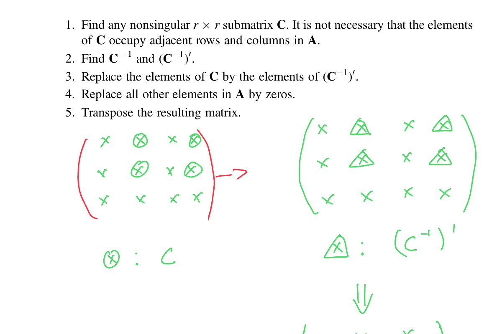
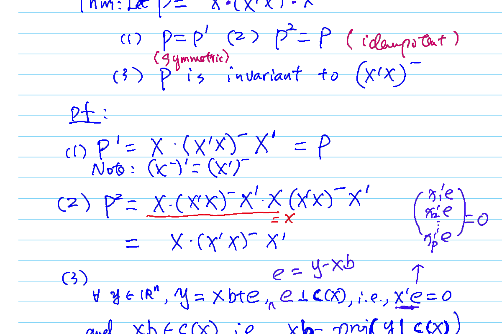
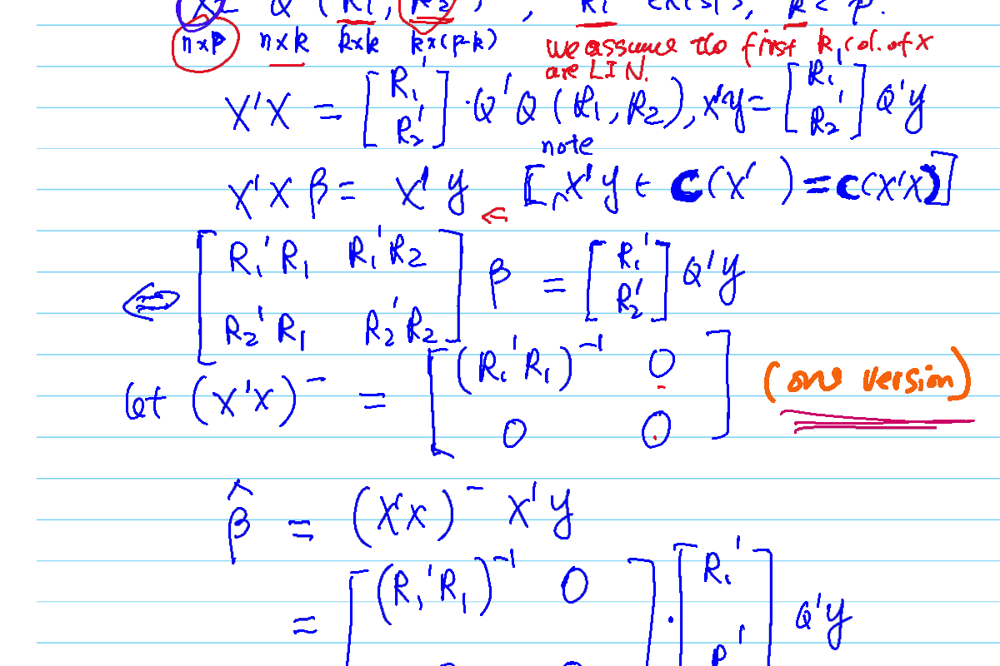

4 Review of Matrix Algebra
This chapter covers a review of matrix algebra concepts essential for linear models, including eigenvalues, spectral decomposition, and generalized inverses.
4.1 Spectral Theory
4.1.1 Eigenvalues and Eigenvectors
Definition 4.1 (Eigenvalues and Eigenvectors) For a square matrix \(A\) (\(n \times n\)), a scalar \(\lambda\) is an eigenvalue and a non-zero vector \(x\) is the corresponding eigenvector if:
\[ Ax = \lambda x \iff (A - \lambda I_n)x = 0 \]
The eigenvalues are found by solving the characteristic equation: \[ |A - \lambda I_n| = 0 \]
4.1.2 Spectral Decomposition
For symmetric matrices, we have a powerful decomposition theorem.
Theorem 4.1 (Spectral Decomposition) If \(A\) is a symmetric \(n \times n\) matrix, all its eigenvalues \(\lambda_1, \dots, \lambda_n\) are real. Furthermore, there exists an orthogonal matrix \(Q\) such that:
\[ A = Q \Lambda Q' = \sum_{i=1}^n \lambda_i q_i q_i' \]
where:
- \(\Lambda = \text{diag}(\lambda_1, \dots, \lambda_n)\) contains the eigenvalues.
- \(Q = (q_1, \dots, q_n)\) contains the corresponding orthonormal eigenvectors (\(q_i'q_j = \delta_{ij}\)).
This allows us to view the transformation \(Ax\) as a rotation (\(Q'\)), a scaling (\(\Lambda\)), and a rotation back (\(Q\)).

4.1.3 Properties of Symmetric Matrices
Several important properties follow from the spectral decomposition:
- Trace: \(\text{tr}(A) = \sum \lambda_i\).
- Determinant: \(|A| = \prod \lambda_i\).
- Singularity: \(A\) is singular if and only if at least one \(\lambda_i = 0\).
- Inverse: If \(A\) is non-singular (\(\lambda_i \ne 0\)), then \(A^{-1} = Q \Lambda^{-1} Q'\).
- Powers: \(A^k = Q \Lambda^k Q'\).
- Square Root: \(A^{1/2} = Q \Lambda^{1/2} Q'\) (if \(\lambda_i \ge 0\)).
4.1.4 Quadratic Forms
The quadratic form associated with a symmetric matrix \(A\) is defined as \(x'Ax\). Using spectral decomposition:
\[ x'Ax = x' Q \Lambda Q' x = y' \Lambda y = \sum_{i=1}^n \lambda_i y_i^2 \] where \(y = Q'x\).
4.1.5 Projection Matrices
We revisit projection matrices in the context of eigenvalues.
Theorem 4.2 (Eigenvalues of Projection Matrices) A symmetric matrix \(P\) is a projection matrix (idempotent, \(P^2=P\)) if and only if its eigenvalues are either 0 or 1.
\[ P^2 x = \lambda^2 x \quad \text{and} \quad Px = \lambda x \implies \lambda^2 = \lambda \implies \lambda \in \{0, 1\} \]
For a projection matrix \(P\):
- If \(x \in Col(P)\), \(Px = x\) (Eigenvalue 1).
- If \(x \perp Col(P)\), \(Px = 0\) (Eigenvalue 0).
- \(\text{rank}(P) = \text{tr}(P) = \sum \lambda_i\) (Count of 1s).
Example: For \(P = \frac{1}{n} J_n J_n'\), the rank is \(\text{tr}(P) = 1\).
4.1.6 Positive Definite Matrices
Definition 4.2 (Positive Definite (p.d.) Matrix) A symmetric matrix \(A\) is positive definite if: \[ x'Ax > 0 \quad \forall x \ne 0 \] It is positive semi-definite (p.s.d.) if: \[ x'Ax \ge 0 \quad \forall x \]
Characterization via Eigenvalues:
- \(A\) is p.d. \(\iff\) all \(\lambda_i > 0\).
- \(A\) is p.s.d. \(\iff\) all \(\lambda_i \ge 0\).
Properties:
- If \(A\) is p.d., then \(|A| > 0\) and \(A^{-1}\) exists.
- If \(B\) is \(n \times p\) with rank \(p\), then \(B'B\) is p.d.
- If \(B\) has rank \(< p\), then \(B'B\) is p.s.d.
4.1.7 Singular Value Decomposition (SVD)
For any \(n \times p\) matrix \(X\) with rank \(r \le \min(n, p)\), \(X\) can be decomposed as:
\[ X = U \Lambda V' = (U_1, U_2) \begin{pmatrix} \Lambda_r & 0 \\ 0 & 0 \end{pmatrix} \begin{pmatrix} V_1' \\ V_2' \end{pmatrix} \]
where:
- \(\Lambda_r = \text{diag}(\lambda_1, \dots, \lambda_r)\) contains the singular values (square roots of non-zero eigenvalues of \(X'X\)).
- \(U\) is \(n \times n\) orthogonal (\(U'U = I_n\)).
- \(V\) is \(p \times p\) orthogonal (\(V'V = I_p\)).

4.2 Cholesky Decomposition
If \(A\) is a positive definite (p.d.) matrix, there exists an upper triangular matrix \(B\) such that:
\[ A = B'B \]
The factorization is unique if we require the diagonal elements of \(B\) to be positive.
\[ B = \begin{pmatrix} b_{11} & b_{12} & \cdots & b_{1n} \\ 0 & b_{22} & \cdots & b_{2n} \\ \vdots & \vdots & \ddots & \vdots \\ 0 & 0 & \cdots & b_{nn} \end{pmatrix} \]
The elements of \(B\) can be solved recursively: \[ \begin{aligned} b_{11}^2 &= a_{11} \implies b_{11} = \sqrt{a_{11}} \\ b_{11}b_{1j} &= a_{1j} \implies b_{1j} = a_{1j}/b_{11} \\ b_{12}^2 + b_{22}^2 &= a_{22} \implies b_{22} = \sqrt{a_{22} - b_{12}^2} \end{aligned} \]
Why Cholesky? Calculating the inverse of an upper triangular matrix \(B\) is computationally easy, making \(A^{-1} = (B'B)^{-1} = B^{-1}(B')^{-1}\) efficient to compute.
4.3 Generalized Inverses
4.3.1 Motivation
Consider the linear system \(X\beta = y\). In \(\mathbb{R}^2\), if \(X = [x_1, x_2]\) is invertible, the solution is unique: \(\beta = X^{-1}y\). This satisfies \(X(X^{-1}y) = y\).
However, if \(X\) is not square or not invertible (e.g., \(X\) is \(2 \times 3\)), \(X\beta = y\) does not have a unique solution. We seek a matrix \(G\) such that \(\beta = Gy\) provides a solution whenever \(y \in C(X)\) (the column space of X).
Substituting \(\beta = Gy\) into the equation \(X\beta = y\): \[ X(Gy) = y \quad \forall y \in C(X) \] Since any \(y \in C(X)\) can be written as \(Xw\) for some vector \(w\): \[ XGXw = Xw \quad \forall w \] This implies the defining condition: \[ XGX = X \]

4.3.2 Definition of Generalized Inverse
Definition 4.3 (Generalized Inverse) Let \(X\) be an \(n \times p\) matrix. A matrix \(X^-\) of size \(p \times n\) is called a generalized inverse of \(X\) if it satisfies: \[ XX^-X = X \]
4.3.3 Examples
Example 1: Diagonal Matrix If \(X = \text{diag}(\lambda_1, \lambda_2, 0, 0)\), a generalized inverse is obtained by inverting the non-zero elements: \[ X^- = \text{diag}(\lambda_1^{-1}, \lambda_2^{-1}, 0, 0) \]
Example 2: Row Vector Let \(X = (1, 2, 3)\). One possible generalized inverse is \(X^- = (1, 0, 0)'\). Verification: \[ XX^-X = (1, 2, 3) \begin{pmatrix} 1 \\ 0 \\ 0 \end{pmatrix} (1, 2, 3) = 1 \cdot (1, 2, 3) = X \] Other valid generalized inverses include \((0, 1/2, 0)'\) or \((0, 0, 1/3)'\).

Example 3: Rank Deficient Matrix Let \(A = \begin{pmatrix} 2 & 2 & 3 \\ 1 & 0 & 1 \\ 3 & 2 & 4 \end{pmatrix}\). Note that Row 3 = Row 1 + Row 2. Rank\((A) = 2\). A generalized inverse can be found by finding a non-singular submatrix.
4.3.4 A Procedure to Find a Generalized Inverse
If we can partition \(X\) (possibly after permuting rows/columns) such that \(R_{11}\) is a non-singular rank \(r\) submatrix:
\[ X = \begin{pmatrix} R_{11} & R_{12} \\ R_{21} & R_{22} \end{pmatrix} \]
Then a generalized inverse is:
\[ X^- = \begin{pmatrix} R_{11}^{-1} & 0 \\ 0 & 0 \end{pmatrix} \]
Verification: \[ \begin{aligned} XX^-X &= \begin{pmatrix} R_{11} & R_{12} \\ R_{21} & R_{22} \end{pmatrix} \begin{pmatrix} R_{11}^{-1} & 0 \\ 0 & 0 \end{pmatrix} \begin{pmatrix} R_{11} & R_{12} \\ R_{21} & R_{22} \end{pmatrix} \\ &= \begin{pmatrix} I_r & 0 \\ R_{21}R_{11}^{-1} & 0 \end{pmatrix} \begin{pmatrix} R_{11} & R_{12} \\ R_{21} & R_{22} \end{pmatrix} \\ &= \begin{pmatrix} R_{11} & R_{12} \\ R_{21} & R_{21}R_{11}^{-1}R_{12} \end{pmatrix} \end{aligned} \] Note that since rank\((X) = \text{rank}(R_{11})\), the rows of \([R_{21}, R_{22}]\) are linear combinations of \([R_{11}, R_{12}]\), implying \(R_{22} = R_{21}R_{11}^{-1}R_{12}\). Thus, \(XX^-X = X\).
4.3.5 Algorithm for Finding a Generalized Inverse
A systematic procedure to find a generalized inverse \(A^-\) for any matrix \(A\):
- Find any non-singular \(r \times r\) submatrix \(C\), where \(r\) is the rank of \(A\). It is not necessary for the elements of \(C\) to occupy adjacent rows and columns in \(A\).
- Find \(C^{-1}\) and \((C^{-1})'\).
- Replace the elements of \(C\) in \(A\) with the elements of \((C^{-1})'\).
- Replace all other elements in \(A\) with zeros.
- Transpose the resulting matrix.
\[ \begin{pmatrix} \times & \otimes & \times & \otimes \\ \times & \otimes & \times & \otimes \\ \times & \times & \times & \times \end{pmatrix} \xrightarrow{C^{-1}} \dots \xrightarrow{T} A^- \]

4.3.6 Moore-Penrose Inverse
The Moore-Penrose inverse (denoted \(X^+\)) is a unique generalized inverse defined via Singular Value Decomposition (SVD).
If \(X\) has SVD: \[ X = U \begin{pmatrix} \Lambda_r & 0 \\ 0 & 0 \end{pmatrix} V' \]
Then the Moore-Penrose inverse is: \[ X^+ = V \begin{pmatrix} \Lambda_r^{-1} & 0 \\ 0 & 0 \end{pmatrix} U' \]
Where \(\Lambda_r = \text{diag}(\lambda_1, \dots, \lambda_r)\) contains the singular values. Unlike standard generalized inverses, \(X^+\) is unique.
4.3.7 Solving Linear Systems
We apply generalized inverses to solve systems of linear equations \(X\beta = c\) where \(X\) is \(n \times p\).
Theorem 4.3 (Consistency and Solution) The system \(X\beta = c\) is consistent if and only if \(c \in \mathcal{C}(X)\) (the column space of \(X\)). If consistent, \(\beta = X^- c\) is a solution.
Proof: If the system is consistent, there exists some \(b\) such that \(Xb = c\). Using the definition \(XX^-X = X\): \[ X(X^- c) = X(X^- X b) = (XX^-X)b = Xb = c \] Thus, \(X^-c\) is a solution. Note that the solution is not unique if \(X\) is not full rank.
4.3.8 Examples of Solutions
Example 1: Let \(X = (1, 2, 3)\). Solve \(X\beta = 4\). One generalized inverse is \(X^- = (1, 0, 0)'\). \[ \beta = X^- \cdot 4 = \begin{pmatrix} 1 \\ 0 \\ 0 \end{pmatrix} 4 = \begin{pmatrix} 4 \\ 0 \\ 0 \end{pmatrix} \] Another \(X^- = (0, 0, 1/3)'\) yields solution \(\beta = (0, 0, 4/3)'\).
Example 2: Let \(X = (1, 2, 3)'\). Solve \(X\beta = \begin{pmatrix} 2 \\ 4 \\ 6 \end{pmatrix} = c\). Here \(c = 2X\), so the system is consistent. Various generalized inverses (e.g., \((1, 0, 0)\), \((0, 1/2, 0)\)) all yield \(\beta = 2\).
4.3.9 Least Squares Solutions
Theorem 4.4 (OLS Estimator) For the normal equations \((X'X)\beta = X'y\), a solution is given by: \[ \hat{\beta} = (X'X)^- X'y \]
The fitted values are \(\hat{y} = X\hat{\beta} = X(X'X)^- X'y\). This \(\hat{y}\) represents the unique orthogonal projection of \(y\) onto \(\mathcal{C}(X)\).
4.3.10 Properties of Generalized Inverses
4.3.10.1 Transpose Property
\((X')^-\) is a version of \((X^-)'\). This implies that if \(G\) is a generalized inverse of \(X\), then \(G'\) is a generalized inverse of \(X'\).
4.3.10.2 Invariance Property
Theorem 4.5 For any version of the generalized inverse \((X'X)^-\), the matrix \(X'(X'X)^- X'\) is invariant and equals \(X'\). \[ X'X(X'X)^- X' = X' \]
Proof (using Projection): Let \(P = X(X'X)^- X'\). This is the projection matrix onto \(\mathcal{C}(X)\). By definition of projection, \(Px = x\) for any \(x \in \mathcal{C}(X)\). Since columns of \(X\) are in \(\mathcal{C}(X)\), \(PX = X\). Taking the transpose: \((PX)' = X' \implies X'P' = X'\). Since projection matrices are symmetric (\(P=P'\)), \(X'P = X'\). Substituting \(P\): \(X' X (X'X)^- X' = X'\).
Proof (Direct Matrix Manipulation): Decompose \(y = X\beta + e\) where \(e \perp \mathcal{C}(X)\) (i.e., \(X'e = 0\)). \[ \begin{aligned} X'X(X'X)^- X' y &= X'X(X'X)^- X' (X\beta + e) \\ &= X'X(X'X)^- X'X\beta + X'X(X'X)^- X'e \end{aligned} \] Using the property \(A A^- A = A\) (where \(A=X'X\)), the first term becomes \(X'X\beta\). The second term is 0 because \(X'e = 0\). Thus, the expression simplifies to \(X'X\beta = X'(X\beta) = X'\hat{y}_{proj}\). This implies the operator acts as \(X'\).
4.3.11 Properties of the Projection Matrix
Let \(P = X(X'X)^- X'\). This matrix has the following properties:
- Symmetry: \(P = P'\).
- Idempotence: \(P^2 = P\). \[ P^2 = X(X'X)^- X' X(X'X)^- X' = X(X'X)^- (X'X (X'X)^- X') \] Using the identity \(X'X(X'X)^- X' = X'\), this simplifies to \(X(X'X)^- X' = P\).
- Uniqueness: \(P\) is invariant to the choice of \((X'X)^-\). This is because \(P\) represents the orthogonal projection onto \(\mathcal{C}(X)\), which is geometrically unique.

4.4 Least Squares with Rank Deficient Matrix
When \(X\) has rank \(r < p\) (where \(X\) is \(n \times p\)), we can derive the least squares estimator using partitioned matrices.
Assume the first \(r\) columns of \(X\) are linearly independent. We can partition \(X\) as: \[ X = Q (R_1, R_2) \] where \(Q\) is an \(n \times r\) matrix with orthogonal columns (\(Q'Q = I_r\)), \(R_1\) is an \(r \times r\) non-singular matrix, and \(R_2\) is \(r \times (p-r)\).
The normal equations are: \[ X'X\beta = X'y \implies \begin{pmatrix} R_1' \\ R_2' \end{pmatrix} Q' Q (R_1, R_2) \beta = \begin{pmatrix} R_1' \\ R_2' \end{pmatrix} Q'y \] Simplifying (\(Q'Q = I_r\)): \[ \begin{pmatrix} R_1'R_1 & R_1'R_2 \\ R_2'R_1 & R_2'R_2 \end{pmatrix} \beta = \begin{pmatrix} R_1'Q'y \\ R_2'Q'y \end{pmatrix} \]
4.4.1 Constructing a Solution
Proof. One specific generalized inverse of \(X'X\) can be found by focusing on the non-singular block \(R_1'R_1\): \[ (X'X)^- = \begin{pmatrix} (R_1'R_1)^{-1} & 0 \\ 0 & 0 \end{pmatrix} \]
Using this generalized inverse, the estimator \(\hat{\beta}\) becomes: \[ \hat{\beta} = (X'X)^- X'y = \begin{pmatrix} (R_1'R_1)^{-1} & 0 \\ 0 & 0 \end{pmatrix} \begin{pmatrix} R_1'Q'y \\ R_2'Q'y \end{pmatrix} \] \[ \hat{\beta} = \begin{pmatrix} (R_1'R_1)^{-1} R_1' Q'y \\ 0 \end{pmatrix} = \begin{pmatrix} R_1^{-1} Q'y \\ 0 \end{pmatrix} \]
The fitted values are: \[ \hat{y} = X\hat{\beta} = Q(R_1, R_2) \begin{pmatrix} R_1^{-1} Q'y \\ 0 \end{pmatrix} = Q R_1 R_1^{-1} Q'y = QQ'y \] This confirms that \(\hat{y}\) is the projection of \(y\) onto the column space of \(Q\) (which is the same as the column space of \(X\)).

4.4.2 Alternative Interpretation
We can view the model as: \[ y = Q(R_1, R_2)\beta + \epsilon = Qb + \epsilon \] where \(b = R_1\beta_1 + R_2\beta_2\).
Since the columns of \(Q\) are orthogonal, the least squares estimate for \(b\) is simply: \[ \hat{b} = (Q'Q)^{-1}Q'y = Q'y \]
To find \(\beta\), we solve the underdetermined system: \[ R_1\beta_1 + R_2\beta_2 = \hat{b} = Q'y \]
Proof. Solution Strategy 1: Set \(\beta_2 = 0\). Then: \[ R_1\beta_1 = Q'y \implies \hat{\beta}_1 = R_1^{-1}Q'y \] This yields the same result as the generalized inverse method above: \(\hat{\beta} = \begin{pmatrix} R_1^{-1}Q'y \\ 0 \end{pmatrix}\).
Solution Strategy 2: Using the generalized inverse of \(R = (R_1, R_2)\): \[ R^- = \begin{pmatrix} R_1^{-1} \\ 0 \end{pmatrix} \] \[ \hat{\beta} = R^- Q'y = \begin{pmatrix} R_1^{-1}Q'y \\ 0 \end{pmatrix} \] This demonstrates that finding a solution to the normal equations using \((X'X)^-\) is equivalent to solving the reparameterized system \(b = R\beta\).